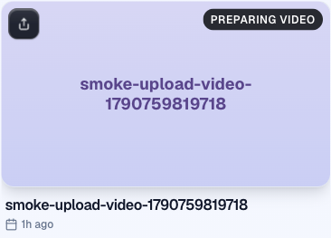
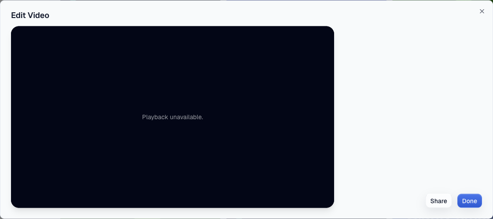
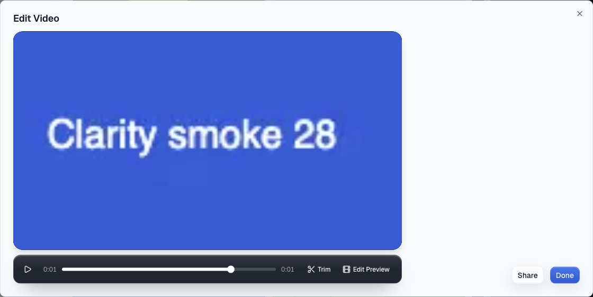

Staging, 2026-09-30. One test video, smoke-upload-video-1790759819718, was put into the exact stored shape of the five stuck production takes (mux_pending: true, no duration) after Mux had long finished it and after its webhook had already been delivered. No webhook arrives for it again, so whatever settles it is a read.


mux_pending cleared. In my run the reset landed at 11:36:47 and the D1 row's updated_at became 11:36:52.684, inside that first read. The independent run's first read after its reset (11:39:21) was ready too; this card is from its second session.
One real 10 s camera take (screenshots withheld, they show a person). The create response read preparing with no mux_pending key; the first library sample read ready with duration 10.07 s; the Edit modal played (currentTime 0.002 s to 1.514 s). Staging delivers Mux webhooks, so this run cannot tell which writer settled it; the reset video above is the no-webhook case.
workers/workspace-tree/tests/mux-video-settles-on-read.test.tsOn main (5 of 6 fail):
× reads as playable once Mux has the asset ready, with no webhook × keeps what it learned, so the next read does not ask Mux again × still answers the listing when Mux is down, and asks again next time × learns the asset of a take claimed before its upload finished × reads as failed when the upload died before Mux made an asset
On the branch: 14 of 14 pass, workspace-tree suite 178 of 178, editor suite 2543 of 2543.
| Piece | Build |
|---|---|
| workspace-tree (staging) | branch fix/mux-readiness-from-mux b5bf5738a, version 632cf17d. Rolled back to 39450362 afterwards, because staging belongs to another agent's branch today. |
| router and editor (staging) | accounts/boardroom-offer 21be066d, main's Mux code. The green run is on this mixed deploy, which is also what production sees for a few minutes during a stack deploy. |